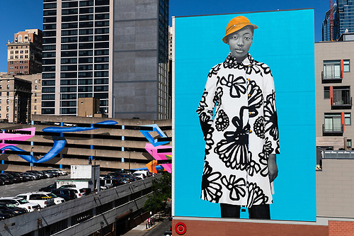

Stop 01 · Center City

2019 · 6 stories tall
Untitled (Najee S.)
Six stories of a North Philly teenager in Sherald's grayscale, against electric blue. By the artist of Michelle Obama's portrait.
0:00 / 0:00
Listen
Next · Common Threads 22 min walk